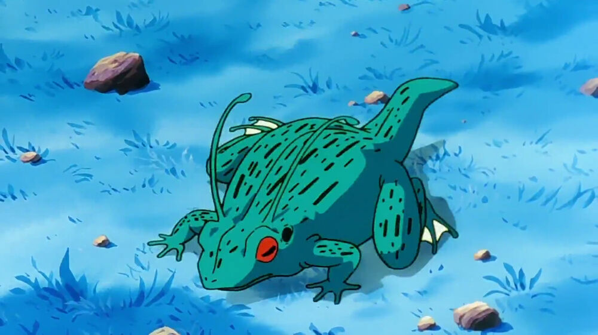
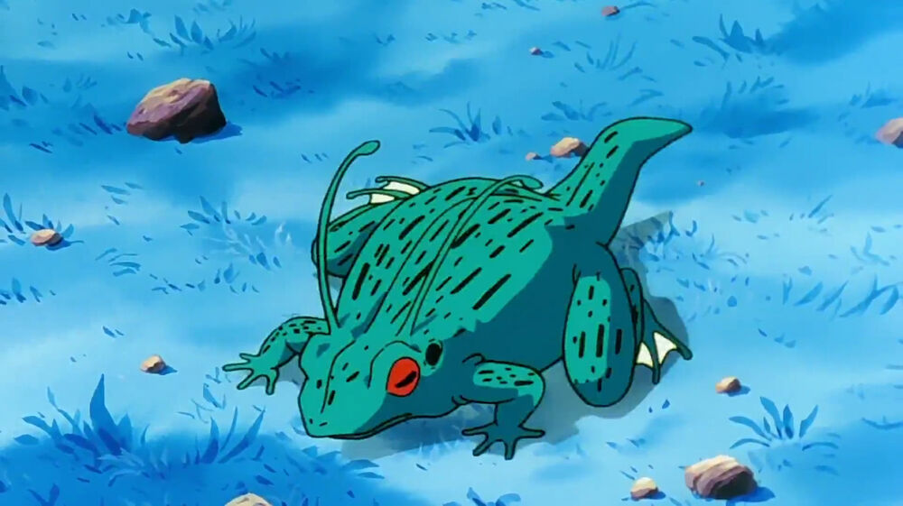
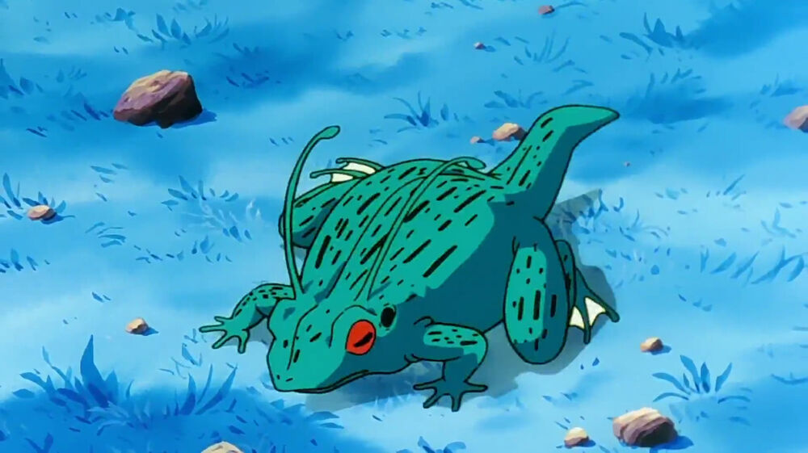

Selin Saracoglu's Portfolio
Java GUI Projects
Instructor & Course Assignments for College Admins
Text Frequency Analyzer & Paragraph Generator

Stock Portfolio Project
Early Text Analyzer
HTML Projects
Movie Ranking Project
Birthday Invite Project
About Me
Contact me
 
